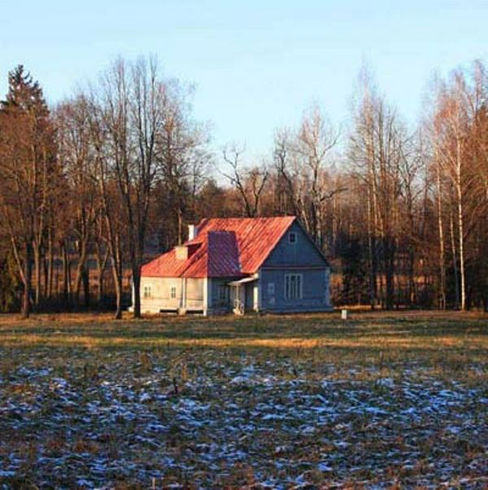

|  | Министерство культуры Российской Федерации Портал Культура.рф Проект «Образы России» |
Le musée-réserve naturel Abramtsevo
LE DATCHA DE POLENOV

Le bâtiment est construit en 1882 par la brigade locale des menuisiers pour le couple de Vasilyi Dmitrievitch et Natalia Vasilievna Polenov. La maison était rechauffée du four et de la cheminée ornée des carreaux imitant la maçonnerie de brique rouge. La décoration de l’intérieur était très simple – le sol et les murs en planches de bois, les meubles aussi – la table, les bancs, l’armoire.
C’était l’atelier de Polenov et le lieu d’organisation des spectacles de maison du cercle artistique d’Abramtsevo. Au début du ХXe s. ici sont restés venus avec les familles pour passer l’été à Abramtsevo P.P.Kontchalovskyi, М. V.Nesterov, V. М. Vasnetsov, l’écrivain L.М. Leonov et d’autres. Dans les années 1915–1916 dans les pièces se trouvait l’infirmerie, plus tard les locaux habitables et la salle à manger de la maison du repos se trouvant sur le territoire du domaine. Actuellement au datcha de Polenov on organise des expositions thématiques.